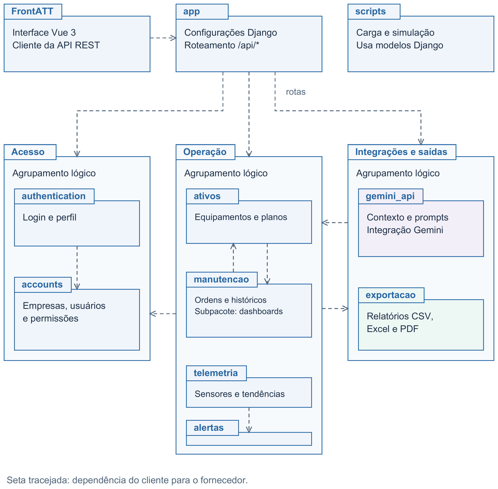
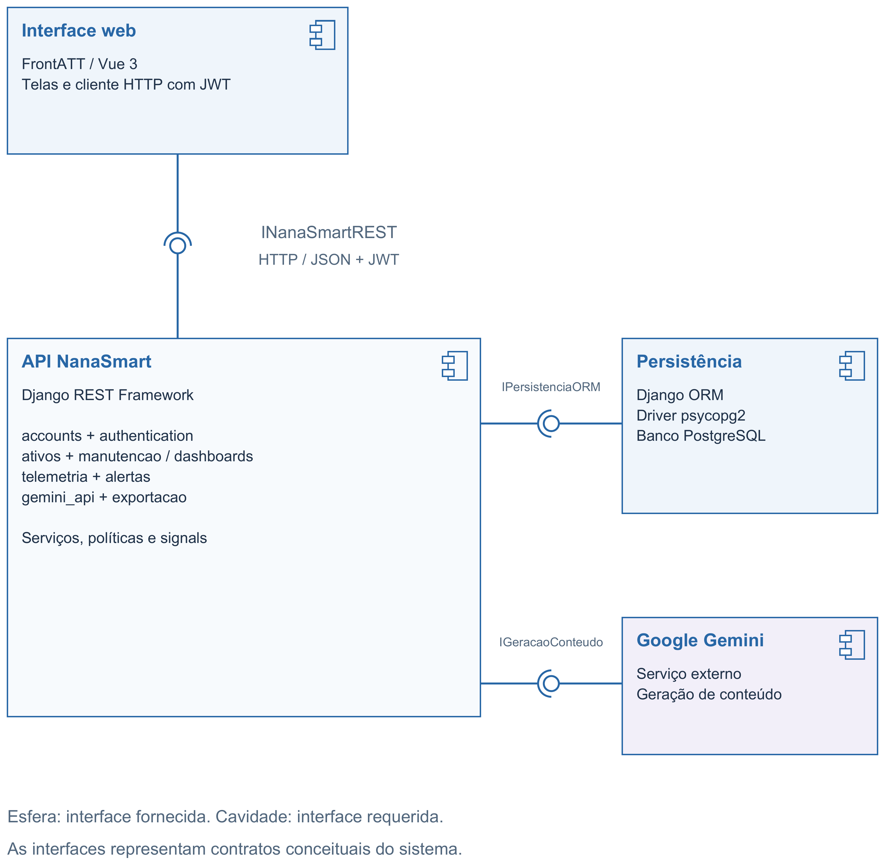
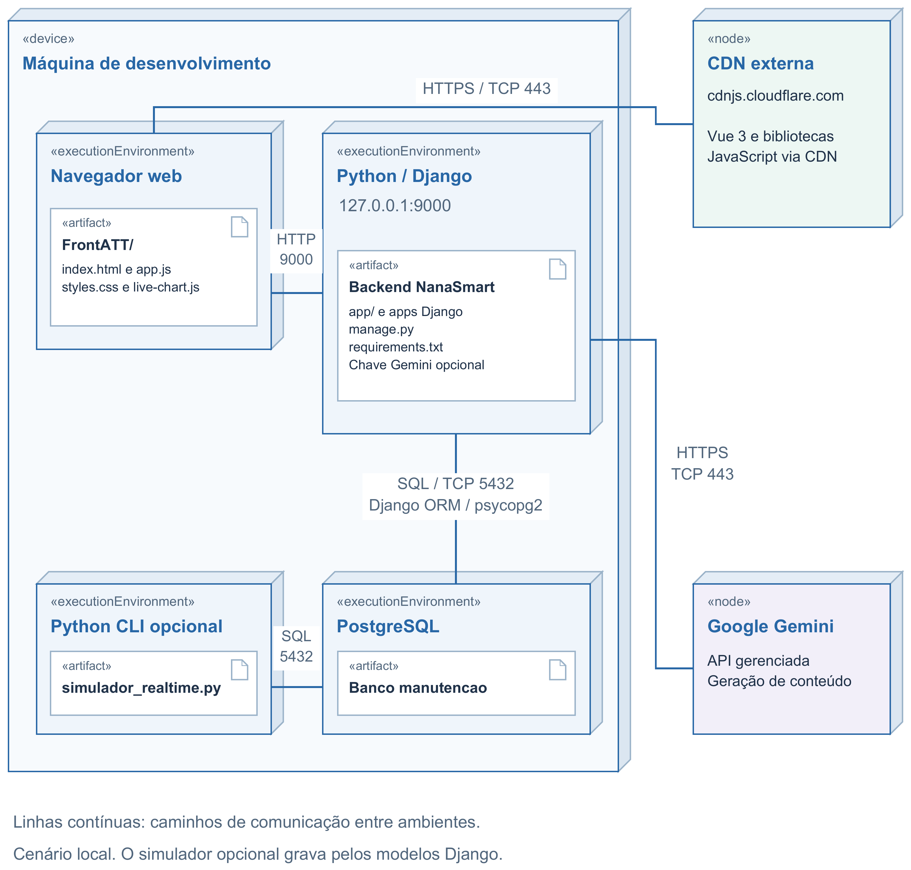

O NanaSmart organiza a interface Vue 3 no pacote FrontATT e o backend Django em apps de negócio. O pacote app centraliza a configuração e as rotas REST. O agrupamento Acesso reúne authentication e accounts, responsáveis por identidade, empresas e permissões. Operação reúne ativos, manutencao, telemetria e alertas; dashboards é um subpacote de manutencao. Integrações e saídas reúne gemini_api e exportacao, que utilizam dados operacionais. scripts apoia a carga e a simulação de dados. Serviços, serializers e o adapter Gemini delimitam responsabilidades e contratos. Há acoplamento entre apps, inclusive dependências recíprocas entre ativos e manutencao. Os módulos Python são públicos; autenticação, perfis e filtros por empresa controlam o acesso pela API. Os agrupamentos lógicos do desenho não representam novos diretórios.

| Componente | Interface Fornecida (Provided) | Interface Requerida (Required) | Finalidade Técnica / Descrição |
|---|---|---|---|
| Interface web | Interface visual | INanaSmartREST | Apresentar as telas Vue 3 e consumir a API com JWT. |
| API NanaSmart | INanaSmartREST | IPersistenciaORM; IGeracaoConteudo | Oferecer autenticação, ativos, manutenção, telemetria, alertas, dashboards, exportação e IA; aplicar permissões e escopo por empresa. |
| Persistência | IPersistenciaORM | Conexão PostgreSQL | Executar consultas e gravações pelo Django ORM e pelo driver psycopg2. |
| Google Gemini | IGeracaoConteudo | Credencial de API e acesso HTTPS | Gerar conteúdo de IA solicitado pelo backend por meio do SDK google-genai. |
